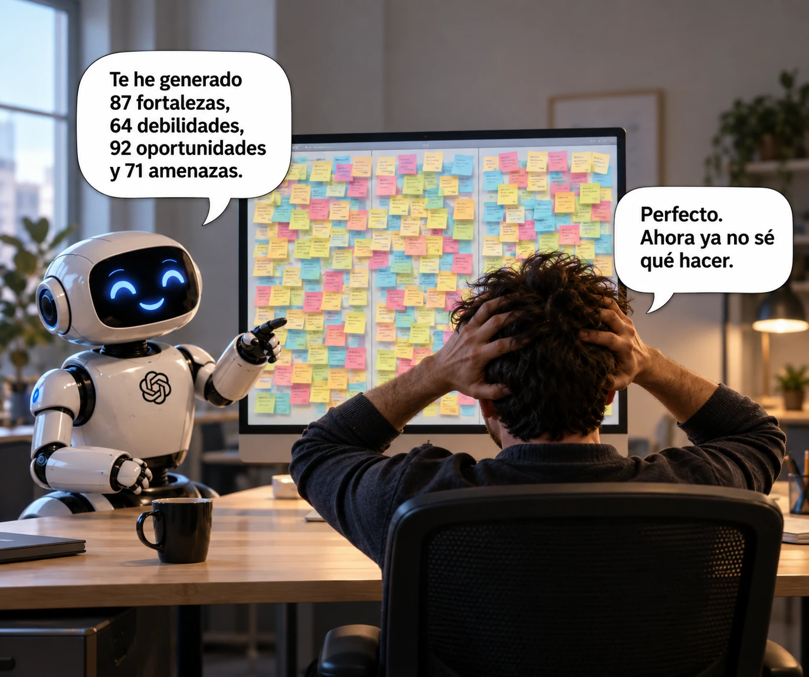

estrategIA #157 ·
Un DAFO que no ayuda a decidir
El contexto
DAFO organiza debilidades, amenazas, fortalezas y oportunidades. Aquí la IA multiplica los elementos de cada categoría hasta desbordar al usuario. Acompaña un número sobre rediseñar el trabajo: producir más análisis no garantiza poder tomar mejores decisiones.
Publicado en: estrategIA #157 — Añadir IA no basta: hay que rediseñar cómo trabajamos
Leer el texto de la imagen
Te he generado 87 fortalezas, 64 debilidades, 92 oportunidades y 71 amenazas. Perfecto. Ahora ya no sé qué hacer.